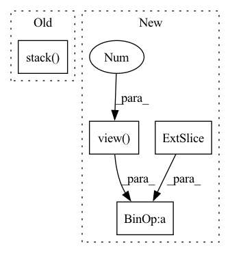

Pattern ID :9216
Before Change
elif len(weight_list.shape) != 2:
raise ValueError("The weight list should be a 2d tensor!")
feat_reshape = torch.stack( feat_list, dim=2)
weight_reshape = weight_list.unsqueeze(dim=2)
weighted_feat = torch.bmm(feat_reshape, weight_reshape).squeeze(dim=2)
return weighted_feat
After Change
raise ValueError("The weight list should be a 2d tensor!")
num_node = feat_list[0].shape[0]
weighted_feat = torch.mul(feat_list[0], weight_list[:, 0].view( num_node, 1 ) )
for i in range(1, len(feat_list)):
weighted_feat = weighted_feat + torch.mul(feat_list[i], weight_list [:, i].view(num_node, 1))
"""feat_reshape = torch.stack(feat_list, dim=2)
weight_reshape = weight_list.unsqueeze(dim=2)In pattern: SUPERPATTERN
Frequency: 3
Non-data size: 4
Instances Fragment ID: 33306077
Project Name: pku-dair/sgl
Commit Name: cebdac589727fff315575d9fc063abcc222ddcf6
Time: 2022-02-24
Author: shengzeang@live.com
File Name: models/utils.py
M Class Name: AnonimousClass
N Class Name: AnonimousClass
M Method Name: two_dim_weighted_add(2)
N Method Name: two_dim_weighted_add(2)
M Parent Class:
N Parent Class:
M File Name: models/utils.py
N File Name: models/utils.py
M Start Line: 54
M End Line: 56
N Start Line: 54
N End Line: 59
Before Change
r[t, 0] = r[t, 0] + x_inflate[0, t]
// 2. p(h|cur step is blank) = [p(prev step is blank) + p(prev step is nonblank)] * p(blank)
r[t, 1] = torch.logsumexp(
torch.stack( (r[t - 1, 0], r[t - 1, 1]), dim=0) , dim=0
)
r[t, 1] = r[t, 1] + x_inflate[1, t]
After Change
for t in range(start, end):
rnb_prev = r[t - 1, 0]
rb_prev = r[t - 1, 1]
r_ = torch.stack([rnb_prev, phi[t - 1], rnb_prev, rb_prev]).view(
2, 2 , self.batch_size * self.beam_size, self.num_candidates
)
r[t] = torch.logsumexp(r_, 1) + x_inflate [:, t]
// Compute the predix prob, psi
psi_init = r[start - 1, 0].unsqueeze(0) Fragment ID: 33306078
Project Name: speechbrain/speechbrain
Commit Name: f4ecd17ce143ffc714823e1ee81742dbac3eec2b
Time: 2020-10-12
Author: ff936tw@gmail.com
File Name: speechbrain/decoders/ctc.py
M Class Name: CTCPrefixScorer
N Class Name: CTCPrefixScorer
M Method Name: forward_step(4)
N Method Name: forward_step(4)
M Parent Class:
N Parent Class:
M File Name: speechbrain/decoders/ctc.py
N File Name: speechbrain/decoders/ctc.py
M Start Line: 118
M End Line: 160
N Start Line: 61
N End Line: 159
Before Change
for i in range(n_samples):
res.append(simple_returns[i] @ weights[i]) // (horizon, n_assets)x(n_assets)=(horizon,)
out = torch.stack( res, dim=0)
if output_type == "log":
return simple2log(out)
After Change
n_samples, horizon, n_assets = simple_returns.shape
weights_ = weights.view( n_samples, 1 , n_assets) .repeat(1, horizon, 1) // (n_samples, horizon, n_assets)
if not rebalance:
weights_unscaled = ( 1 + simple_returns).cumprod(1)[:, :-1, :] * weights_[:, 1:, :]
weights_[:, 1:, :] = weights_unscaled / weights_unscaled.sum(2, keepdim=True)
out = (simple_returns * weights_).sum(-1) Fragment ID: 33306079
Project Name: jankrepl/deepdow
Commit Name: f641c531de3bbae674357327fc5dfa6335164d94
Time: 2020-05-01
Author: jankrepl@yahoo.com
File Name: deepdow/losses.py
M Class Name: AnonimousClass
N Class Name: AnonimousClass
M Method Name: portfolio_returns(5)
N Method Name: portfolio_returns(4)
M Parent Class:
N Parent Class:
M File Name: deepdow/losses.py
N File Name: deepdow/losses.py
M Start Line: 82
M End Line: 87
N Start Line: 48
N End Line: 92